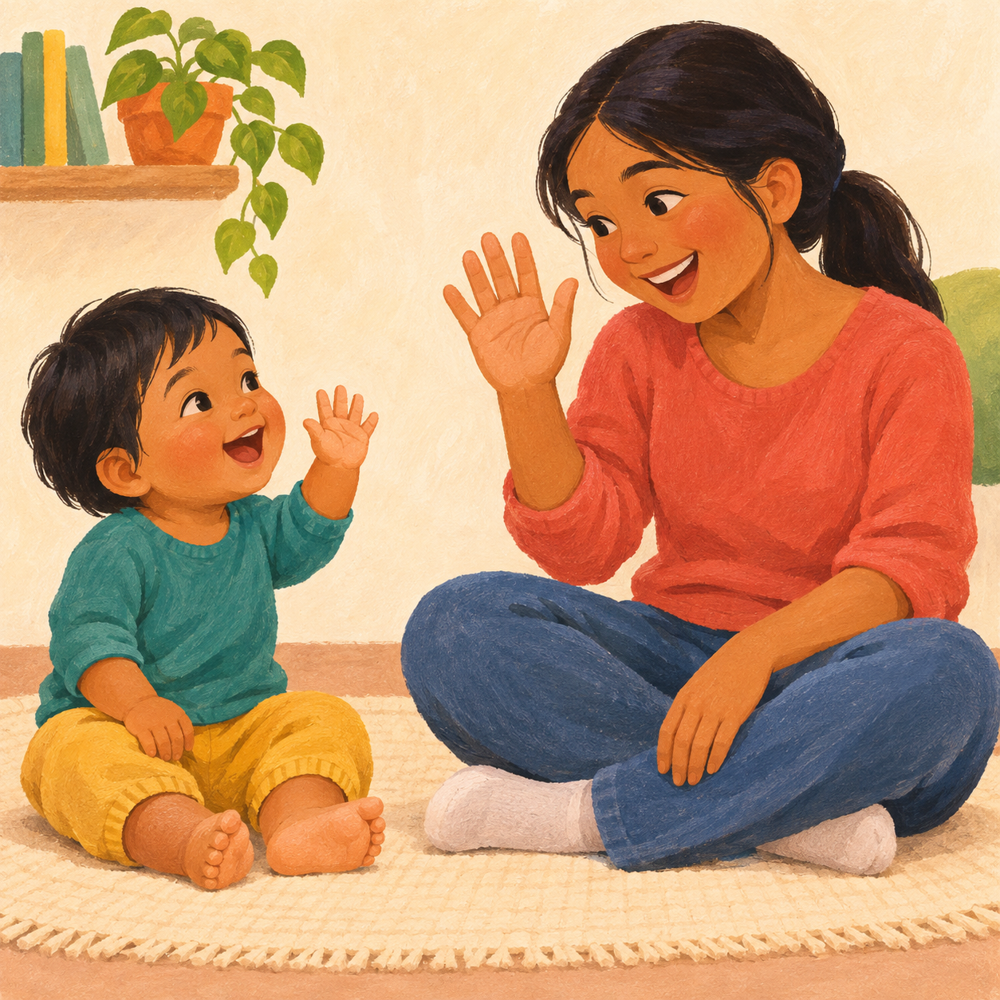

PEQUEÑOS MOMENTOS, UNA LENGUA COMPARTIDA
Guachochi 12 a 24 meses Con una persona adulta

UN RATITO JUNTOS
Nos saludamos
Miremos la imagen y compartamos un saludo a nuestro ritmo.
RARÁMURI DE CHOGUITA
ˈkuíra (ba)
Hola
Voz en rarámuri
Grabación pendiente para este saludo
La palabra está documentada en la fuente. La escena Agua ya incluye una grabación de una hablante de Choguita.
Cómo acompañar este momento
- Miren la imagen y acompaña el saludo con un gesto.
- Si conoces una expresión de tu comunidad, úsala.
- Responde a sus miradas, gestos o sonidos. No hace falta que repita.